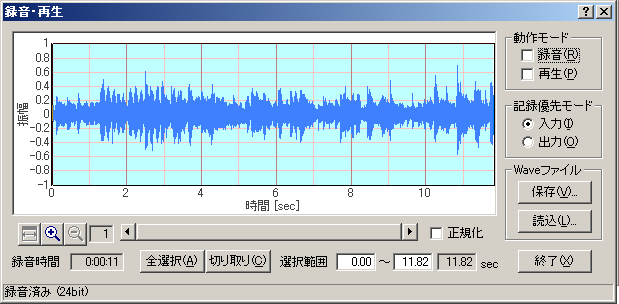

DSSF3 > RA > リファレンス
録音再生
FFTアナライザやオシロスコープと同時に動作させることで、音の記録、再生、編集などの機能が、測定と同時に使えます。シグナルジェネレータや、1/3オクターブ分析、オシロスコープ、リアルタイムなACF、IACF測定や、3D表示なども、このデジタル入出力機能を使えば、音の劣化がなくデジタルで直接やりとりできます。録音時間は10分くらいまで可能です。初期表示は9秒までですが、何秒でも録音可能で、表示はリアルタイム表示されます。

| 項目 |
説明 |
| 動作モード |
記録 |
シグナルジェネレータ、FFTアナライザ、オシロスコープを実行中にチェックすると記録されます。 |
| 再生 |
チェックを入れて、FFTアナライザ、オシロスコープを実行すると、記録されている音声データを再生しながら、それをFFTアナライザ、オシロスコープで測定できます。 |
| 記録優先モード |
入力 |
入力と出力を同時に行った場合、入力データを優先的に録音します。どちらか一方だけの場合は、この選択に関わらず実行されている方を録音します。 |
| 出力 |
入力と出力を同時に行った場合、出力データを優先的に録音します。どちらか一方だけの場合は、この選択に関わらず実行されている方を録音します。 |
| Waveファイル |
保存 |
録音したデータをWAVEファイルに保存します。 |
| 読込 |
WAVEファイルから波形データを取り込みます。 |
| 終了 |
「録音・再生」ウィンドウを閉じます。 |
| 項目 |
説明 |
| 正規化 |
最も大きい振幅を１に正規化します。 |
| 記録時間 |
記録した時間を表示します。 |
| 全選択 |
記録全体を選択します。 |
| 切り取り |
録音波形ウィンドウの選択されている範囲を切り取ります。
（グラフ内を右クリックして切り取る範囲を指定することもできます。）
|
[録音](Recording)ボタンをONにした状態でシグナルジェネレータ、FFTアナライザ、オシロスコープを実行するとそのときのWAVEデータが録音されます。次に[再生](Playback)ボタンをクリックした状態でFFTアナライザ、オシロスコープを実行すると録音したWAVEが再生されます。WAVEのグラフを右クリックすると選択範囲を変更できます。[保存](Save)ボタンで録音したデータをWAVEファイルに保存できます。[読込](Load)ボタンでWAVEファイルからデータを取り込めます。
レコーダーでの録音時のモニター用の表示窓は、測定中にリアルタイムにモニター表示できます。レコーダー機能は、再生時にはWAVEファイルからの直接の測定を目的としています。そのためレコーダーウィンドウを開いた後に、まず録音にしようするか、再生に使用するかのモードを設定します。その後FFTアナライザーを起動すると、そのスタートにあわせて自動で録音をおこないます。
また、いったんWAVEファイルなどをレコーダーにLOADしてあれば、そのスタートにあわせて自動再生します。レコーダーに再生するデータがあるかどうかで、このモード切替スイッチが使用可能時にだけ設定できるようにソフト制御され、ラジオボタン化されています。WAVEファイルなどをレコーダーにLOADして、FFTアナライザーやオシロスコープで測定するときWAVEファイルのサンプリングに同期して測定します。
DSSF3 > RA > リファレンス